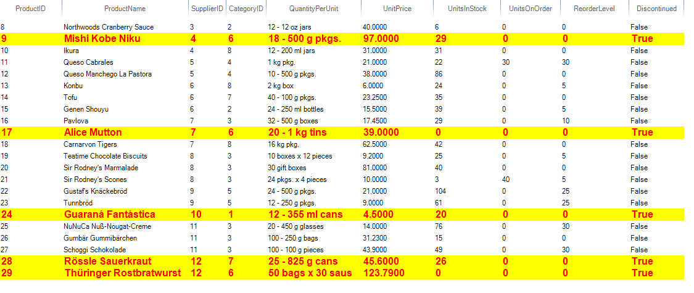

Formatting Items
Formatting items in ListView and IconsView modes
Items appearance in RadListView can be customized by making use of the
VisualItemFormatting event. The following example,
demonstrates how you can change the color of an item which is being selected
By using this event to customize the items appearance, you should always provide an else clause,
where you reset the appearance settings which you have introduced. This is necessary since
RadListView uses data virtualization, which might lead to unpredicted appearance results
when items are being reused.

[C#] Customizing items
Font font = new Font("Consolas", 14, FontStyle.Bold);
void radListView1_VisualItemFormatting(object sender, Telerik.WinControls.UI.ListViewVisualItemEventArgs e)
{
if (e.VisualItem.Selected)
{
e.VisualItem.NumberOfColors = 1;
e.VisualItem.BackColor = Color.LightGreen;
e.VisualItem.ForeColor = Color.Red;
e.VisualItem.BorderColor = Color.Blue;
e.VisualItem.Font = font;
}
else
{
e.VisualItem.ResetValue(LightVisualElement.NumberOfColorsProperty, Telerik.WinControls.ValueResetFlags.Local);
e.VisualItem.ResetValue(LightVisualElement.BackColorProperty, Telerik.WinControls.ValueResetFlags.Local);
e.VisualItem.ResetValue(LightVisualElement.ForeColorProperty, Telerik.WinControls.ValueResetFlags.Local);
e.VisualItem.ResetValue(LightVisualElement.BorderColorProperty, Telerik.WinControls.ValueResetFlags.Local);
e.VisualItem.ResetValue(LightVisualElement.FontProperty, Telerik.WinControls.ValueResetFlags.Local);
}
}
[VB.NET] Customizing items
Private font As New Font("Consolas", 14, FontStyle.Bold)
Private Sub radListView1_VisualItemFormatting(sender As Object, e As Telerik.WinControls.UI.ListViewVisualItemEventArgs)
If e.VisualItem.Selected Then
e.VisualItem.NumberOfColors = 1
e.VisualItem.BackColor = Color.LightGreen
e.VisualItem.ForeColor = Color.Red
e.VisualItem.BorderColor = Color.Blue
e.VisualItem.Font = font
Else
e.VisualItem.ResetValue(LightVisualElement.NumberOfColorsProperty, Telerik.WinControls.ValueResetFlags.Local)
e.VisualItem.ResetValue(LightVisualElement.BackColorProperty, Telerik.WinControls.ValueResetFlags.Local)
e.VisualItem.ResetValue(LightVisualElement.ForeColorProperty, Telerik.WinControls.ValueResetFlags.Local)
e.VisualItem.ResetValue(LightVisualElement.BorderColorProperty, Telerik.WinControls.ValueResetFlags.Local)
e.VisualItem.ResetValue(LightVisualElement.FontProperty, Telerik.WinControls.ValueResetFlags.Local)
End If
End Sub
Formatting cells in DetailsView mode
The DetailsView of RadListView provides a grid-like interface for displaying items with more than one data field.
It is possible to customize each cell element, using the CellFormatting event.
Cell elements are created only for currently visible cells and they are being reused, when scrolling. In order to
prevent applying the formatting to other cell elements, all applied styles should be reset for the rest of the cell elements.
Let’s assume that the RadListView is bound to the Products table from the Northwind database.
The code snippet below demonstrates how to apply different colors and font for the data cells in the control, considering the “Discontinued” cell’s value:

[C#] Customizing cells
private void ListViewFormattingItems_Load(object sender, EventArgs e)
{
this.productsTableAdapter.Fill(this.nwindDataSet.Products);
this.radListView1.DataSource = this.productsBindingSource;
this.radListView1.DisplayMember = "ProductName";
this.radListView1.ValueMember = "ProductID";
this.radListView1.ViewType = ListViewType.DetailsView;
this.radListView1.CellFormatting += radListView1_CellFormatting;
}
Font newFont = new Font("Arial", 12f, FontStyle.Bold);
private void radListView1_CellFormatting(object sender, ListViewCellFormattingEventArgs e)
{
DetailListViewDataCellElement cell = e.CellElement as DetailListViewDataCellElement;
if (cell != null)
{
DataRowView productRowView = cell.Row.DataBoundItem as DataRowView;
if (productRowView != null && (bool)productRowView.Row["Discontinued"] == true)
{
e.CellElement.BackColor = Color.Yellow;
e.CellElement.ForeColor = Color.Red;
e.CellElement.GradientStyle = Telerik.WinControls.GradientStyles.Solid;
e.CellElement.Font = newFont;
}
else
{
e.CellElement.ResetValue(LightVisualElement.BackColorProperty, Telerik.WinControls.ValueResetFlags.Local);
e.CellElement.ResetValue(LightVisualElement.ForeColorProperty, Telerik.WinControls.ValueResetFlags.Local);
e.CellElement.ResetValue(LightVisualElement.GradientStyleProperty, Telerik.WinControls.ValueResetFlags.Local);
e.CellElement.ResetValue(LightVisualElement.FontProperty, Telerik.WinControls.ValueResetFlags.Local);
}
}
}
[VB.NET] Customizing cells
Private Sub FormattingItems_Load(sender As Object, e As EventArgs) Handles MyBase.Load
Me.ProductsTableAdapter.Fill(Me.NwindDataSet.Products)
Me.RadListView1.DataSource = Me.ProductsBindingSource
Me.RadListView1.DisplayMember = "ProductName"
Me.RadListView1.ValueMember = "ProductID"
Me.RadListView1.ViewType = ListViewType.DetailsView
AddHandler Me.RadListView1.CellFormatting, AddressOf radListView1_CellFormatting
End Sub
Private newFont As New Font("Arial", 12.0F, FontStyle.Bold)
Private Sub radListView1_CellFormatting(sender As Object, e As ListViewCellFormattingEventArgs)
Dim cell As DetailListViewDataCellElement = TryCast(e.CellElement, DetailListViewDataCellElement)
If cell IsNot Nothing Then
Dim productRowView As DataRowView = TryCast(cell.Row.DataBoundItem, DataRowView)
If productRowView IsNot Nothing AndAlso CBool(productRowView.Row("Discontinued")) = True Then
e.CellElement.BackColor = Color.Yellow
e.CellElement.ForeColor = Color.Red
e.CellElement.GradientStyle = Telerik.WinControls.GradientStyles.Solid
e.CellElement.Font = newFont
Else
e.CellElement.ResetValue(LightVisualElement.BackColorProperty, Telerik.WinControls.ValueResetFlags.Local)
e.CellElement.ResetValue(LightVisualElement.ForeColorProperty, Telerik.WinControls.ValueResetFlags.Local)
e.CellElement.ResetValue(LightVisualElement.GradientStyleProperty, Telerik.WinControls.ValueResetFlags.Local)
e.CellElement.ResetValue(LightVisualElement.FontProperty, Telerik.WinControls.ValueResetFlags.Local)
End If
End If
End Sub